Garda przypływu
Zapisany wypad
Miara kości
Postawa zapadki
Zielona litania
Promienna klauzula
Równowaga półmroku
Uświęcony tłok
Adnotacja chmury
Pamięć torfu
Burzowe serwo
Grobowa formuła
Indeksowane koło
Sczerniały silnik
Zbiórka mistrza
Święte otwarcie
Pierwotny przewód
Czwarte twierdzenie
Brama ossuarium
Precyzyjna odlewnia
Żarliwa wymiana
Okopana wola
Miara męczennika
Świetlisty ciężar
Pakt odpływu
Kamienny oddech
Świadomy zakład
Lustrzany dług
Krwawy inwentarz
Pusta zbroja
Przetaktowany układ
